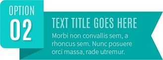
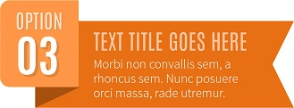

Html-CSS入门
从最基本的概念开始讲起，步步深入，带领大家学习HTML、CSS样式基础知识，了解各种常用标签的意义以及基本用法
学习web前端开发基础技术需要掌握：HTML、CSS、JavaScript语言。下面我们就来了解下这三门技术都是用来实现什么的：
1. HTML是网页内容的载体。内容就是网页制作者放在页面上想要让用户浏览的信息，可以包含文字、图片、视频等。
2. CSS样式是表现。就像网页的外衣。比如，标题字体、颜色变化，或为标题加入背景图片、边框等。所有这些用来改变内容外观的东西称之为表现。
3. JavaScript是用来实现网页上的特效效果。如：鼠标滑过弹出下拉菜单。或鼠标滑过表格的背景颜色改变。还有焦点新闻（新闻图片）的轮换。可以这么理解，有动画的，有交互的一般都是用JavaScript来实现的。

百度AI自然语言处理技术
自然语言处理（NLP）是计算机科学，人工智能，语言学关注计算机和人类（自然）语言之间的相互作用的领域
自然语言处理是计算机科学领域与人工智能领域中的一个重要方向。它研究能实现人与计算机之间用自然语言进行有效通信的各种理论和方法。自然语言处理是一门融语言学、计算机科学、数学于一体的科学。因此，这一领域的研究将涉及自然语言，即人们日常使用的语言，所以它与语言学的研究有着密切的联系，但又有重要的区别。自然语言处理并不是一般地研究自然语言，而在于研制能有效地实现自然语言通信的计算机系统，特别是其中的软件系统。因而它是计算机科学的一部分。

产品经理究竟是干什么的？
产品经理主要的工作就是：规划、设计产品，对产品研发过程的控制，最终把产品卖出去的一个过程
上次回家遇到同学，说起以前他校招给我投产品经理的简历被我刷掉的事情。我于是便问他：你究竟为什么想要做产品？我那个同学回答我：”我学长告诉我，产品经理入门简单，啥都不会就可以干，而且工资很高啊！”我忍不住骂了句：”我日啊！”今天又在知乎上看到一个问题：“产品经理究竟是干嘛的？“，看到一个个自说自话的回答实在是受不了，就想写一下，我所理解的产品经理的主要工作究竟是什么。简单来说，产品经理主要的工作就是：规划、设计产品，对产品研发过程的控制，最终把产品卖出去的一个过程。而产品经理，基于服务的对象不同，主要分为两种：to b (针对企业)和to c(针对用户)，虽然两者的侧重点有不同，但是他们基本的工作方式还是很类似的。初入门的产品总会有这样误区，就是总觉得产品经理的主要工作是绘制界面原型。曾经面试过一个应聘产品助理的妹子，我在考验她逻辑思维能力的时候，她对我的问题表示出了不屑，不停的跟我强调自己会使用各种绘图和设计软件。其实，学习能力，思维的逻辑性，比单纯的使用一个软件的技能要更重要。而且，产品的原型的设计只是产品经理众多工作输出偏向于后期的一种。
ABOUT ME
你如今的气质里，藏着你走过的路，读过的书
和爱过的人
Hey，我是张乾，一只大三狗，就读于西安电子科技大学。
学习之余，Music、Flim、Game，尽情享受生活；跑步、健身、游泳也是我的菜，欢迎与我交流学习，希望能够交到朋友，共同成长。这是我的利用 GitHub Pages 搭建的个人博客。我的GitHub主页：GitHub-ZQ
联系方式
QQ:909141729
邮箱：zhangqian676896@163.com
Git账号：Zhangqian676896